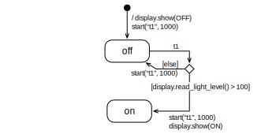
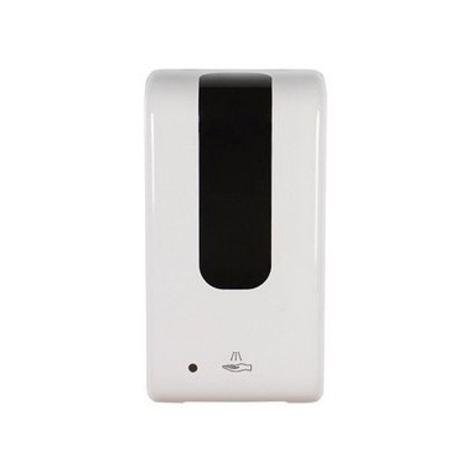

We have created 5 tasks which all let you solve a slightly different problem related to state machines. The tasks are independent of each other, but the first one is the easiest to get started and the last one is maybe a bit challenging.
Here’s an overview:
Counter: You run the example, just to check that all works, and explain the behavior in words.
Shake Light: Create a state machine diagram from code.
Night Light: Extend a state machine diagram, and extend its code.
Switch Light: You get the state machine diagram, but build all code on your own.
Hand Sanitizer Station: You create state machine diagram and code by yourself from a textual description.
Pencil and paper are probably still the best tools for sketching a state machine when you are working on your own. Don’t underestimate the value of making quick sketches and iterating on them before you make an electronic version of your diagram for documentation.
Whiteboards or blackboards have the benefit that you can work in groups, if you are physically at the same place.
Drawing applications are often easy to access and use, but do not know that you want to create a special diagram style. Though this is probably your best option. You can create simple state machine diagrams in a shared PowerPoint, to which you have access in Teams. Another option is Draw.io, but it requires you to login with a Google account.
Working Style
There is not a lot to program today in counting the lines of code. The goal is rather to train an approach to system development and problem exploration — the state machines and Python code are just tools to get there. Therefore:
Make sure at each one in your team follows. In this lab, make sure you are familiar with all the details, and can follow everything. If not all points are clear to everyone, ask your team mates, or vice-versa, explain it to them.
For each task, give everyone a few minutes to think individually. You can only have valuable team discussions if everyone had the chance to think on their own first.
Counter
Goal: Get the state machine code running, to check that all works.
We have created the files for today’s tasks, and you can download them from a Git repository as a zip-file.
All files are self-contained and can run independently of each other, that means, all contain the base state machine.
Diagram for the Counter
The counter is an electronic version of a hand counter, like the one they use on airplanes to count how many passengers are on board. Ours is made for very small planes — it can only count to 10.
Task: Describe the behavior of the shake light in a few sentences.
Task: Draw a state machine that corresponds to the code. Make sure to include all necessary elements.
Night Light
Goal: Extend a given diagram to extends its functionality, and extend the corresponding code.

Above you see the partial state machine of a night light, which depends on the light level, and switches on when it reaches > 100.
Task: Describe the behavior of the shake light in a few sentences.
Task: Extend the state machine diagram so that it also switches the light off again after the level goes under 80.
Task: Add the code for the added functionality and check that it works. Include a series of small screenshots in your report.
Switch Light
Goal: Build all code on your own from a given state machine diagram.
Above is the diagram for a light that can be switched on and off.
Task: Have a close look at the diagram, and describe what it does in words.
Task: Build the entire code for the state machine.
Use the code given in file switch.py as starter.
You only have to fill the content of the functions initial_transition and transition.
Hand Sanitizer Station
Goal: Create diagram and code by yourself.

Create the state machine for a hand santizer. These machines, as you know, detect that someone puts their hand under the dispenser, then run a motor for 800 milliseconds to dispense some sanitizer.
To avoid double-dispensing, the machine ignores a repeated dispensing for about 2 seconds, that means, you need to wait for 2 seconds before it dispenses another load. (Sometimes irritating if you want a double dose…)
Task: Create such a state machine diagram.
Try to sketch one on your own, each one individually for a few minutes.
Compare your solutions.
Use the state machines to understand the function better. Do you all agree on what the system should exactly do?
Some hints:
Assume that a detected hand is signalled by event shake. That means, if the shale event is detected, the dispenser should dispense a dose by switching on its motor.
Instead of switching on a motor, just show an arrow pointing downwards (Image.ARROW_S) on the display.
Make sure it does activate the dispenser (by showing the arrow) for the 800 milliseconds.
Make sure it does not double dispense within 2 seconds after the first detected shake.
The state machine we came up with has three control states, which we called for ready, dispensing and blocked. The names do not matter, but may indicate what happens in them.
Task: Create the code for the machines. Use file dispenser.py as starting point.
Task: Document the solution of your dispenser as detailed as possible, to explain to the reader how it works. Include a comic-like sequence of screenshots, too.